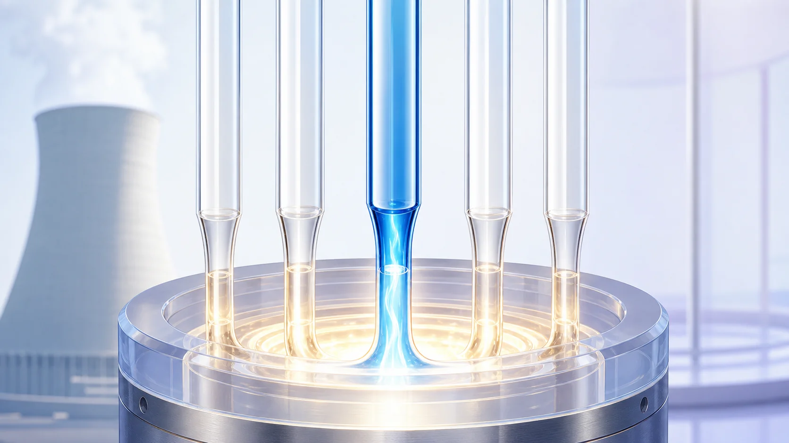
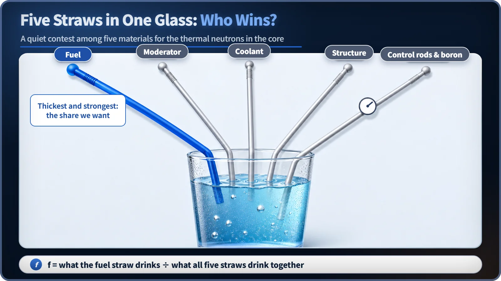
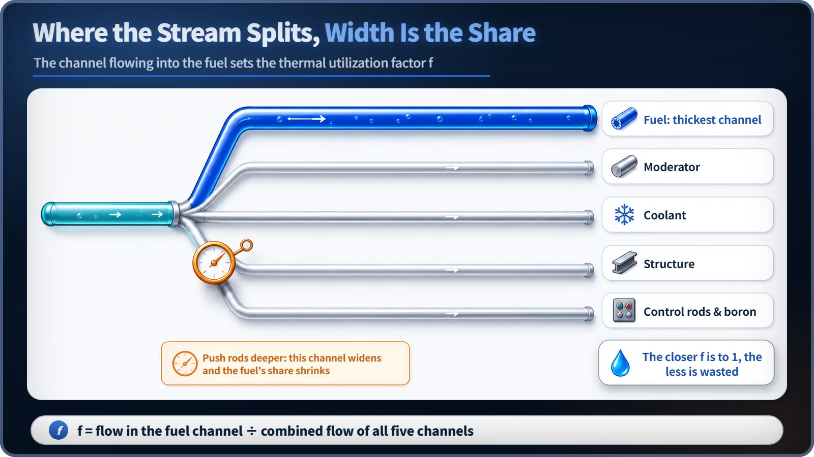

Neutron Physics & the Core · 086
Five Straws in One Glass — Who Drinks the Most? The Thermal Utilization Factor Explained
Every thermal neutron is absorbed somewhere in the core. The thermal utilization factor is the share that lands in the fuel.

Every thermal neutron in a reactor core is eventually absorbed somewhere, but not always in the fuel. The thermal utilization factor f is the fraction of thermal-neutron absorptions that happen in the fuel rather than in the moderator, coolant, structure or control material. It always lies between 0 and 1, and operators lower it on purpose whenever they insert control rods or add boron. [1]
Five straws, one glass
Picture one big glass of soda with five straws stuck in it at once. Five people sip the same drink, one through a fat straw, another through a thin one, and someone barely drinking at all, as if the straw were pinched. Sooner or later the glass will be empty. But the interesting question isn't whether the drink disappears. It's who drank how much of it.
Almost exactly the same thing happens inside a reactor core. Only here, what disappears is thermal neutrons, and the people holding straws are materials: the fuel, the moderator, the coolant, the structural parts, and control rods or boron. Every one of those neutrons will eventually be absorbed somewhere in the core, and the key point is that the fuel is not the only place they can go. What we actually want is the share the fuel straw drinks, because that is the absorption that can lead to fission. The name for that share is the thermal utilization factor.
The same contest plays out in the core
The step from one generation of neutrons in a reactor to the next can be described as a product of six ratios, six gates a neutron population has to pass through. The thermal utilization factor is one of those six gates. The other gates deal with neutrons that are still fast or slowing down; thermal utilization is about the moment after a neutron has become a slow thermal neutron and is finally absorbed by something.
A thermal neutron wanders around the core until something captures it. The catch is that fuel is not the only material that can grab it. The moderator, which slows neutrons down (ordinary water, heavy water or graphite, for example), absorbs some neutrons too, and so does the coolant that carries the heat away. Then there are structural parts such as the cladding tubes that hold the fuel, plus the control rods and the boron dissolved in the coolant, both put there on purpose to regulate the reaction. Each of them is sipping from the same pool of thermal neutrons through its own straw. We want the neutron to be absorbed in the fuel, where it can set up the next fission, rather than somewhere useless, and that ratio is the thermal utilization factor, written f. [1]

So what exactly is f? Putting it into numbers
In words: thermal utilization factor f = thermal neutrons absorbed in the fuel ÷ thermal neutrons absorbed in the whole core. The numerator is what the fuel straw drank; the denominator is what all five straws drank together. f always lies between 0 and 1, and the closer it is to 1, the more completely the thermal neutrons went to the fuel without being wasted.
Physicists express each material's appetite for neutrons with a quantity called the macroscopic absorption cross section. It simply means how good a material is at absorbing neutrons per unit volume. You get it by multiplying the number of atoms by each atom's individual ability to capture a neutron (the microscopic absorption cross section). Line up all the core materials by this value, and the thermal utilization factor can be written roughly as: [1]
f ≈ (macroscopic absorption cross section of the fuel) ÷ (sum of the macroscopic absorption cross sections of everything in the core: fuel + moderator + coolant + structure + control material, and so on)
So f is the fuel's share among five (or more) terms in the denominator. That's why designers try hard to build the parts that have no business catching neutrons, such as the moderator and the structure, from materials that absorb as few as possible. One reason fuel cladding is made of zirconium alloy is that this metal absorbs hardly any thermal neutrons, so it doesn't eat into f. [2]
A name that misleads: "thermal utilization" is not power-plant efficiency
From the name alone, "thermal utilization" sounds like the plant's efficiency, how well it turns heat into electricity. "Thermal" here doesn't mean temperature; it means thermal neutrons. And "utilization" doesn't mean producing electricity; it means how much of those neutrons the fuel gets to claim. How well the turbine turns heat into electricity is a different question in a different part of the plant.
A second trap is to read f as the probability that fission happens. f is only the probability that a neutron is absorbed in the fuel; it doesn't promise that the absorption leads to fission. Some neutrons absorbed in the fuel are simply captured, with no fission. Finally, f often gets lumped together with the resonance escape probability (p). p is the probability that a neutron, still slowing down in the intermediate energy range, gets past the trap of resonance absorption. f comes much later: once the neutron is already slow, it decides "who absorbs it at the moment of absorption." Both involve the word "absorption," but they happen at different times and against different competitors.
Push in a control rod and one straw gets fatter
The thermal utilization factor is largely set when the core is designed. How much fuel and moderator you use and how you arrange them, what the structure and cladding are made of, and whether the coolant is ordinary (light) water or heavy water all change f. Heavy water, for instance, absorbs far fewer neutrons than light water, so using it as moderator or coolant makes it much easier to keep f high. Thanks to this, some reactor types can sustain a fission chain reaction on natural uranium, with no enrichment at all.
Here's the interesting part: f isn't fixed once and for all at the design stage. It changes in real time while the reactor runs. When an operator pushes the control rods deeper or raises the boron concentration in the coolant, the control-rod-and-boron straw suddenly gets fatter. Out of the same supply of thermal neutrons, the control material now takes a bigger share, and the fuel's share, f, goes down. Pull the rods out or lower the boron concentration, and f rises again. In other words, the two most common tools operators use to adjust reactivity, control rods and boron, effectively fine-tune this value of f. Shutting a reactor down by driving the control rods all the way in works on the same principle: make the control-material straw as fat as possible and slash the fuel's share. [2]

A twist from real geometry: it's a little darker inside the fuel
So far I've talked as if the core were one well-mixed, uniform batter. A real reactor isn't like that. The fuel is packed into thin rods, and the moderator fills the spaces between them. Because the fuel soaks up thermal neutrons so strongly, the density of thermal neutrons (the flux) is pushed lower inside a fuel rod than out in the moderator. This is called self-shielding, or flux depression. In straw terms, the drink right around the fuel straw is slightly more diluted than around the other straws. Real core designs account for this subtle difference when they calculate f precisely. [2]
Today's one-line takeaways
- The thermal utilization factor (f) is the probability that a thermal neutron, when absorbed, is absorbed in the fuel rather than the moderator, coolant, structure or control material.
- f = thermal neutrons absorbed in the fuel ÷ thermal neutrons absorbed in the whole core, and it always lies between 0 and 1.
- It is one of the six gates, set apart from the earlier ones because it decides "who absorbs the neutron" after the neutron has already become thermal.
- The name invites confusion with plant efficiency (turning heat into electricity), but it is a completely different, neutron-physics quantity.
- Inserting control rods or adjusting the boron concentration effectively lowers f to control reactivity, so f is tied to operation, not just design.